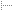

Installation
Installation
 Details
Usage
Docs
Screenshots
Bugs
Packages
Download
You shouldn't need to do anything else to simply try out this package. (Though emacs20 will look much better if you use the dot-Xresources.)
Installation Procedure
-
Execute the test script as described on the previous page.
-
Add psgmlx to Emacs Startup
Put the following lines in your .emacs file:
(setq psgmlxpath "path-to-psgmlx-directory") (load (concat psgmlxpath "/init"))
In the first statement, enter the correct path to the psgmlx directory for your setup. The path must NOT have a trailing slash. The dot-emacs.el file has an example.
For example, if you untar it in your home directory and don't change its name, you'd have
(setq psgmlxpath "~/psgmlx-0.3") (load (concat psgmlxpath "/init"))
-
X Resources
If you want Emacs to have a spiffy menubar and menus, put the contents of the dot-Xresources file into your .Xresources file. Then update the X resource database by issuing the command: xrdb ~/.Xresources
-
Miscellaneous Settings
The stuff in "misc-settings.el" is loaded in the demo, but not by default. To always load this file at start-up, put the following in your .emacs, BEFORE you load psgmlx-init:
(setq misc-settings t)
-
Windows Users
If you want windows-style CUT, COPY, PASTE, and UNDO keyboard commands, put the following in your .emacs BEFORE you load psgmlx-init:
(setq winkeys t)
-
Changing the Default Color Theme
Edit default-color-theme.el to select what you wamt, or put it's content in your .emacs. This stuff must go AFTER you load psgmlx-init, when emacs will know where to find things.
-
SGML Catalog Configuration
If you're using a central system catalog, you'll need to tell psgml where it's located. To do so, put a line like this in your .emacs:
(setq sgml-catalog-files "path-to-system-catalog")